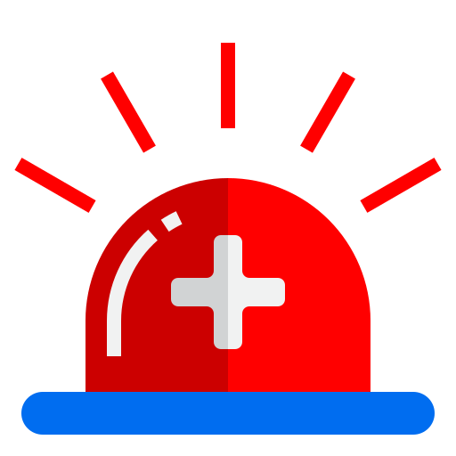

¿Necesitas Informacion?
Contáctanos por WhatsApp
 Contactar por WhatsApp
Contactar por WhatsApp
Ofrecemos una cobertura desde 5 de mayo asta campo esperanza
Administración segura y adecuada de medicamentos.
Atención inmediata para estabilizar a los pacientes.
Tratamiento para heridas y quemaduras.
Monitoreo de signos vitales para evaluar el estado del paciente.
Aplicación segura de medicamentos y fluidos intravenosos.
Intervención rápida y en situaciones de emergencia.
Nos encargamos de cada emergencia con rapidez y profesionalismo.
